בחרו דמות
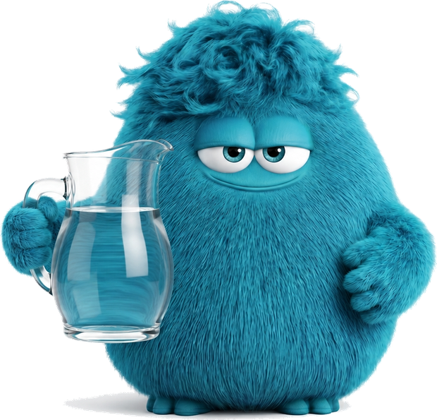
רוני קיבלה גלאי מתכות חדש והיא מנסה למצוא דברי ערך על חוף הים.
היא מצאה תליון בצורת כוכב ורוצה לגלות מאיזו מתכת הוא עשוי.
לשם כך עליה למדוד בין השאר את נפח התליון.
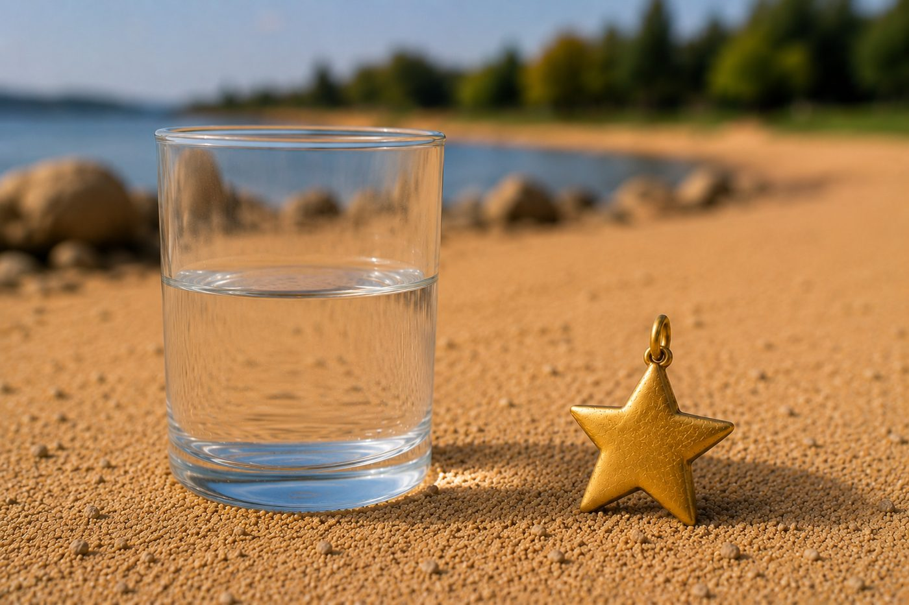
חשבו על רעיון או שניים – איך רוני יכולה למדוד את נפח התליון?
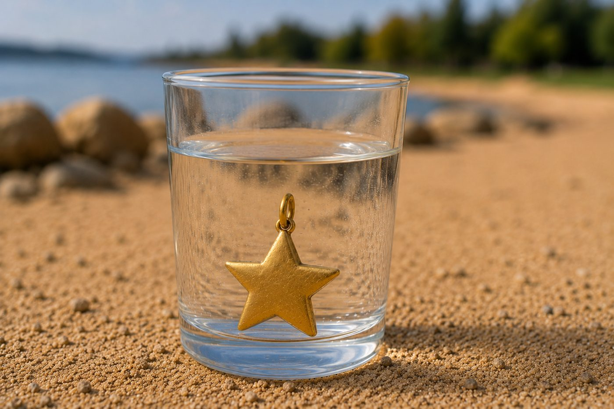
אם נכניס את התליון לתוך כלי עם מים, מפלס המים יעלה.
ההפרש בין מפלס המים החדש למפלס המים המקורי שווה לנפח התליון!
סמנו את התמונות המתאימות
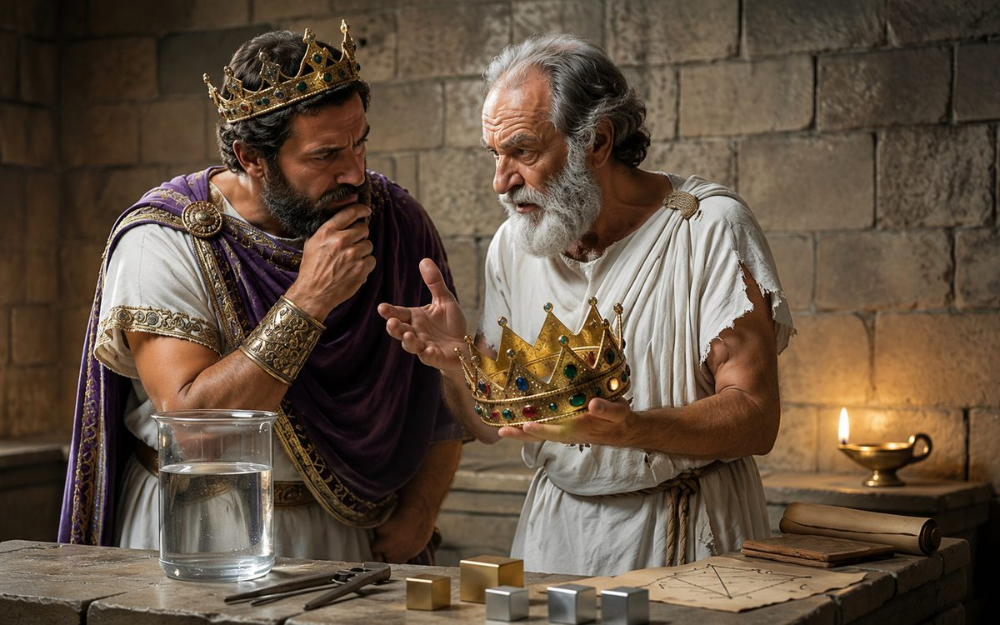
המלך הירון השני קיבל כתר חדש, אבל הוא חשד שהכתר אינו עשוי מזהב טהור.
הוא ביקש מארכימדס לבדוק זאת בלי לגרום לכתר כל נזק.
ארכימדס הבין שעליו למדוד תחילה את נפח הכתר, אך צורתו המורכבת והמעוטרת הקשתה עליו למצוא דרך לעשות זאת.
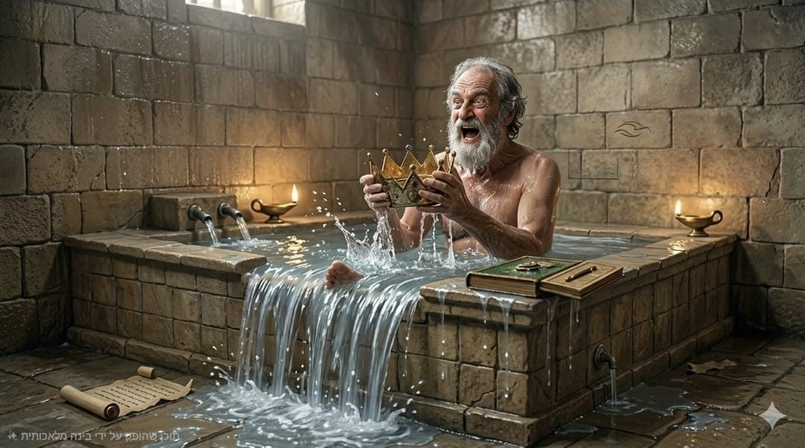
יום אחד, בזמן שרחץ באמבטיה, ארכימדס הבחין שמפלס המים עולה כשהוא נכנס למים.
הוא הבין שאפשר למדוד נפח של גוף לפי כמות המים שהוא דוחק החוצה מהכלי בו הוא נמצא, וקרא בהתלהבות: "אאוריקה!" "מצאתי!".
כך נולדה שיטת דחיקת המים, המשמשת למדידת נפח של גופים בעלי צורה מורכבת עד היום.
בחרו איך ללמוד ב-5 הדקות הקרובות:
נחשו: איך נמדוד נפח של גופים שאינם הנדסיים בעלי צורות שונות?
נחשו: מה לגבי גופים גדולים שלא נכנסים במשורה?
הכניסו את הגולה אל תוך המשורה.
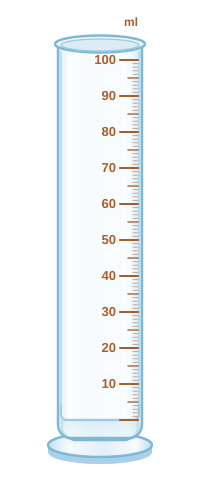
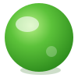
גררו אותי למשורה
מפלס המים עלה ברגע שהגולה נכנסה למשורה.
עיקרון ארכימדס: כשמכניסים גוף למים, מפלס המים עולה בכמות השווה לנפח הגוף בדיוק.
נפח סופי − נפח מקורי = נפח הגולה
62 − 50 = 12 מ"ל
העיקרון תקף לגופים שאינם מתמוססים במים. גוף הרגיש למים אפשר לעטוף בשכבת מגן דקה ואטומה למים לפני ההכנסה למשורה.
לפניכם אקווריום בצורת קובייה. כמה מים צריך כדי למלא אותו עד הקצה? קרבו את הסרגל לדופן המסומנת בצהוב ובצעו את המדידה.
גררו את הסרגל לדופן הצהובה
קרבו את הסרגל לדופן הצהובה ובצעו את המדידה כדי לענות.
לגוף שאינו נכנס למשורה. הכניסו את האבן לתוך הקערה הגדולה המלאה במים.
גררו את האבן לקערה
המים בקערה גלשו ברגע שהאבן נכנסה אליה, והמים העודפים התנקזו לכלי האיסוף התחתון.
כמות המים שגלשו מהקערה = נפח האבן!
לגופים קלים שצפים במים אפשר לחבר משקולת שתשקיע אותם — ולהחסיר את נפח המשקולת מהתוצאה הסופית.
עכשיו נעבור לתרגול ונענה על כמה שאלות על מדידת נפח של מוצקים.
הילה מילאה משורה במים עד לקו 50 מ"ל, והכניסה פנימה אבן קטנה. גובה המים במשורה עלה ל-73 מ"ל. מה נפח האבן?
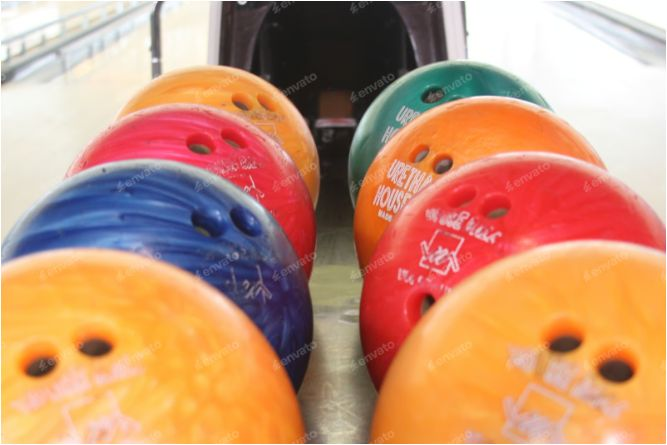
במפעל לייצור כדורי באולינג רצו לבדוק את נפח הכדור האחרון שיצא מפס הייצור. איזו שיטה מתאימה למדידת נפח הכדור?
הילדים במעבדה מנסים למדוד נפח של כפית ממתכת. לחצו על הילד שהטיעון שלו מדעי ומבוסס על ראיה.
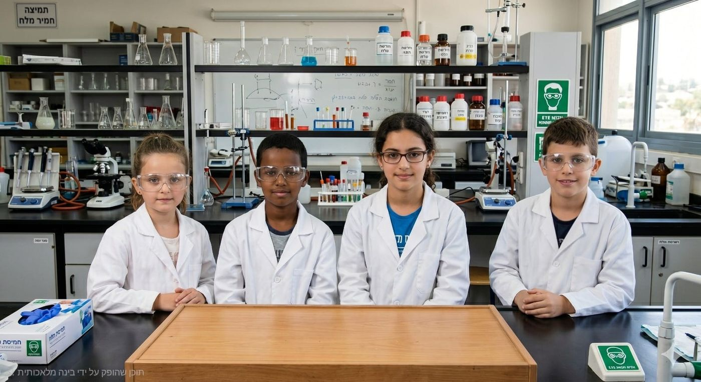
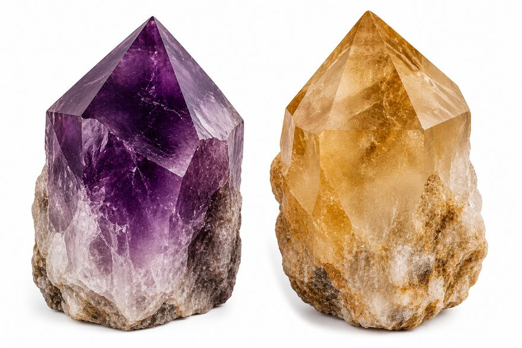
אופק ואחיו קיבלו קריסטלים ענקיים. הם מילאו כלי במים עד הקצה, השקיעו קריסטל, אספו את המים שנשפכו ומדדו את נפחם. אופק טוען: "בעזרת כמות המים שנשפכו אפשר לדעת את נפח הקריסטל". האם אופק צודק?
גררו כל גוף לשיטת מדידת הנפח המתאימה לו.
גופים למדידה:
חימום
ל-5 מדענים צעירים ניתנו משימות מדידה שונות. התאימו כל משימה לכלי המתאים לה.
משימות המדידה:
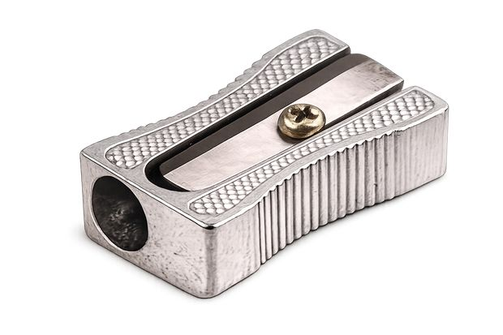
חימום
עיקרון דחיקת המים — השלימו את המשפט בעזרת תפריט המילים:
כדי למדוד נפח של מחדד, נכניס אותו למים שבמשורה ונבדוק כמה הם .
השיטה של ארכימדס חיה ופועלת עד היום! לחצו על הקלפים כדי לגלות היכן משתמשים בה בתעשייה, במסחר ובמדע.
נחשו – איך נמדוד נפח של גופים גדולים שלא נכנסים במשורה?
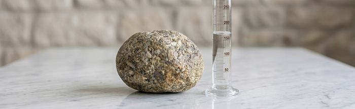
גררו לכלי המתאים
נחשו – איך נמדוד נפח של גופים שאינם הנדסיים, כמו אלה שבתמונה?
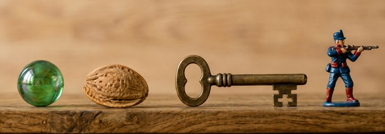
במעבדות משתמשים בכלי ייעודי למדידת נפח של מוצק בשיטת ההצפה. בחנו אותו וחשבו: איך הוא עובד?
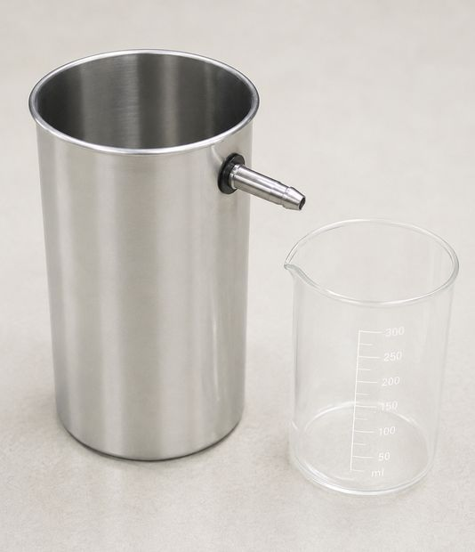
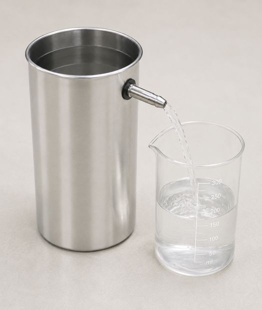
סיימנו את שלב הלימוד, נעבור לתרגול הראשון ונענה על 5 שאלות.
צריך לענות נכון על 4 שאלות (80%) לפחות.
לא הכל ברור? אפשר לפנות אל הצ'אט או אל המורה לחיזוק!